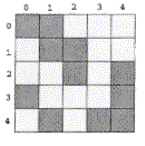

Counting Cells in a Blob
Consider a two-dimensional grid of cells, each of which may be empty or filled. Filled cells form blobs. The filled cells that are connected form the same bigger blob. Two cells are said to be connected if they are adjacent to each other horizontally, vertically or diagonally. There may be several blobs on the grid. Your job is to find the largest blob (in terms of number of cells) on the grid.
The following figure illustrates a grid with 3 blobs (the largest contains 5 cells).

Write a program that determines the size of the largest blob for a given set of blobs.
The input begins with a single positive integer on a line by itself indicating the number of the cases following, each of them as described below. This line is followed by a blank line, and there is also a blank line between two consecutive inputs.
The grid is given as a set of string, each composed of 0s and 1s. The 1 indicates that the cell is filled and 0 indicates an empty cell. The strings should be converted into the grid format.
The largest grid that should be considered is a 25x25 grid.
The output is the size of the largest blob found on the grid.
Sample Input
1
11000
01100
00101
10001
01011
Sample Output
5